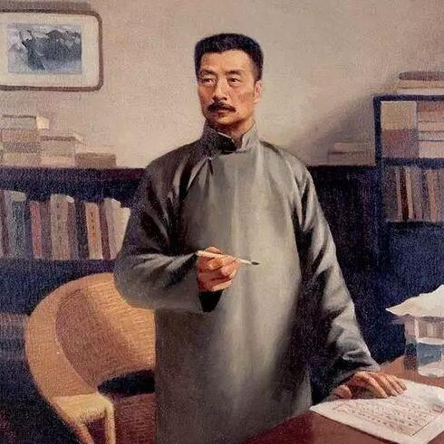
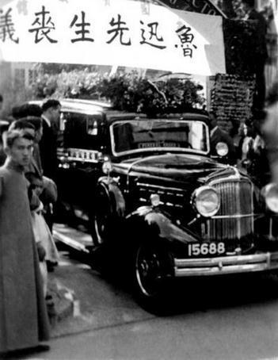
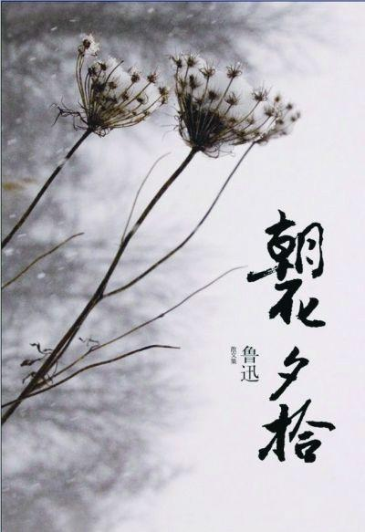
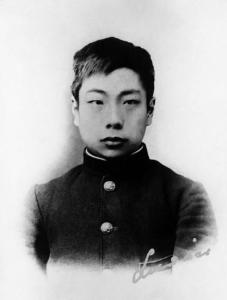
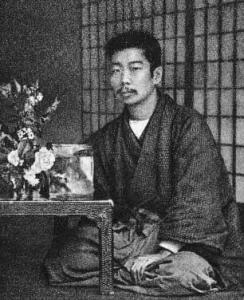
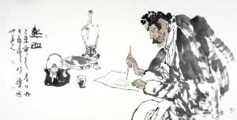
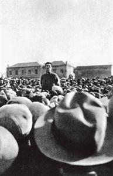
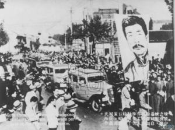

相关图片
- 
- 

- 
鲁迅（曾用名周樟寿，后改名为周树人，1881年9月25日－1936年10月19日），字豫山，后改豫才，浙江绍兴人，著名文学家、思想家、民主战士，五四新文化运动的重要参与者，中国现代文学的奠基人，代表作有《呐喊》《彷徨》等。
鲁迅一生在文学创作、文学批评、思想研究、文学史研究、翻译等多个领域具有重大贡献。他对于五四运动以后的中国社会思想文化发展具有重大影响，蜚声世界文坛，被誉为“二十世纪东亚文化地图上占最大领土的作家”。毛泽东曾评价：“鲁迅的方向，就是中华民族新文化的方向。”
光绪七年（1881年）9月25日（夏历辛巳年八月初三），生于浙江绍兴城内东昌坊新台门周家。幼名阿张，长根，长庚，学名周樟寿。
光绪十八年（1892年），入三味书屋从寿镜吾读书，课余影描图画。与章闰水建立友谊。
光绪十九年（1893年），祖父周介孚因事下狱，父周伯宜又抱重病，家产中落，全家避难于乡下。每每为父亲出入于质铺及药店，遭人冷眼。
光绪二十二年（1896年），父亲去世。家境益艰。于本年开始写日记。
光绪二十三年（1897年），家族开会分房，分给鲁迅他们的既差且小，鲁迅拒绝签字遭到叔辈们斥责，倍感世态炎凉。
奋力求学光绪二十四年（1898年），4月，入南京水师学堂，改名周树人。12月，被本家叔催促参加县考，中榜后以四弟患病为由不再参加府考，继续前往南京求学。
光绪二十五年（1899年）转入江南陆师学堂附设矿务铁路学堂，学开矿。这期间接触了赫胥黎的《天演论》，对他以后的思想具有一定影响。除读新书外，爱骑马运动，敢于和旗人子弟骑马竞赛。
光绪二十八年（1902年）1月，矿路学堂毕业。3月，公费赴日本留学。4月，入弘文学院普通科江南班（为日语学习速成班）。
光绪二十九年（1903年）剪辫。课余喜读哲学与文艺之书，尤注意人性及国民性问题。
光绪三十年（1904年），4月，于弘文学院结业。6月，祖父介孚公卒，年六十八。9月，入仙台医学专门学校（现东北大学）肄业，相识藤野严九郎。
光绪三十二年（1906年），1月，课间观“日俄战争教育片”，深受刺激，决定弃医从文。6月，将学籍列入“东京独逸语协会”所设的德语学校。夏秋间，被骗回国与朱安结婚。旋即复赴日本，7月，从仙台回到东京，不再入学读书，专门从事文艺译著工作，此后几年通过不同方式学习了德语，俄语。
光绪三十四年（1908年），从章太炎先生学习，为“光复会”会员，并与二弟作人译《域外小说集》，期间生活艰难，以校对书稿补贴生活。
宣统元年（1909年），《域外小说集》二册出版。
迷茫困顿宣统元年（1909年）8月，归国，任杭州、浙江两级师范学堂生理学和化学教员兼任日本教员铃木珪寿的植物学翻译。
宣统二年（1910年），8月，任绍兴中学堂教员兼监学。1911年，写个人的第一篇小说文言小说《怀旧》。
民国元年（1912年），临时政府成立于南京，应教育总长蔡元培之邀，任教育部社会教育司第一科科长。八月任命为教育部佥事。从本年起至1917年，他大量抄古碑，辑录金石碑帖，校对古籍，其中也对佛教思想进行了一定的研究。
民国六年（1917年），7月7日，因张勋复辟乱作，愤而离职，14日，乱平即返部。
民国七年（1918年），1月，参加《新青年》改组，任编委。
文坛先声民国七年（1918年）5月，以鲁迅为笔名发表中国现代文学史上第一篇用现代体式创作的白话短篇小说《狂人日记》，载在《新青年》第四卷第五号。
民国九年（1920年），在北京大学，北京高等师范学校讲授中国小说史，6月，读《共产党宣言》中文译本盛赞译者。9月，发表小说《风波》。
民国十二年（1923年），8月，小说集《呐喊》出版；与弟弟周作人分居，迁至西四塔胡同61号居住，分居原因不明。12月，作《娜拉走后怎样》演讲，兼任女师大，世界语学校教师；《中国小说史略》上册出版。
民国十三年（1924年），7月，赴西安讲《中国小说的历史变迁》。8月返京。11月，《语丝》周刊出版，鲁迅在首期发表《论雷峰塔的倒掉》，自此鲁迅成为《语丝》作家群的主将之一。
民主战士民国十四年（1925年），“女师大风潮”进一步升级，鲁迅因支持进步学生正义斗争被教育总长章士钊免除佥事职务，同年，鲁迅向平政院状告章士钊。
民国十五年（1926年），3月，“三一八惨案”发生。4月，鲁迅作《死地》《记念刘和珍君》等抨击段祺瑞政府屠杀学生的罪行，遭追捕，避难于山本医院。避难期间笔耕不辍。8月，《彷徨》出版，赴厦门大学任国文系教授。12月辞职。
民国十六年（1927年），1月赴中山大学任教。3月，与中共两广区委书记陈延年会见。4月1日，赴黄埔军校发表演讲《革命时代的文学》，12日，“四一二反革命政变”发生，29日，营救进步学生无果愤然辞职。8月，发表《魏晋风度及文章与药及酒之关系》。9月，致信台静农，拒绝作为诺贝尔文学奖候选人，离开广州赴上海，并与许广平在上海开始同居生活。12月，与梁实秋等人就“第三种人”、“自由人”发生论争，双方争论持久，影响巨大。
民国十七年（1928年），春，参加中国革命互济会。本年，与创造社、太阳社大部分成员就“革命文学”问题展开论争。是年开始大量搜集马克思主义著作，并为之翻译。同时开始提倡革命美术，倡导现代木刻运动。
民国十八年（1929年），9月27日，许广平生子，鲁迅为其取名“周海婴”。年底，与冯雪峰多次磋商组建“中国左翼作家联盟。”
左联盟主民国十九年（1930年），2月，中国自由运动大同盟成立，为发起人之一。3月2日，出席中国左翼作家联盟成立大会，被选为常务委员，作《对左翼作家联盟的意见》演讲。
民国二十年（1931年），1月20日，柔石被逮，鲁迅离寓避难。28日回旧寓。
民国二十一年（1932年），1月29日，遇战事，在火线中。次日避居内山书店。二月六日，由内山书店友护送至英租界内山支店暂避。与艾青等人发起“春地美术研究所”。
民国二十二年（1933年），1月，蔡元培函邀加入“民权保障同盟会”，被举为执行委员。2月17日，蔡元培函邀赴宋庆龄宅，欢迎萧伯纳。作《为了忘却的纪念》怀念柔石。
民国二十三年（1934年），1月，与郑振铎合编的《北平笺谱》出版。5月，编序之木刻《引玉集》出版。
民国二十四年（1935年），2月开始译果戈里《死魂灵》。6月，集成《新文学大系·小说二集》并作长序。
民国二十五年（1936年），1月，肩及肋骨皆出现剧痛，最后的创新之作《故事新编》出版。2月，开始续译《死魂灵》第二部。5月15日再发病，医生诊断胃疾，自后发热未愈，31日，史沫特黎女士引美国邓医生来诊断，情况不乐观。6月，身体略有好转，鲁迅及身边的人都认为“鲁迅先生好了”。10月17日病复发，18日黎明前疾病发作，气喘不止。19日上午5时25分逝世。